La
bocca modulata trovasi nella localitò detta i Caselli, ed è un
manufatto stabile di pietra che presenta due luci larghe ciascuna metri
1,95, munite di paratoie elevabili fino a metri 1,15 sopra la soglia,
manovrabili stando nel casello sovrastante. A monte di questo
manufatto, sulla sponda destra della roggia esiste uno sfioratore lungo
metri 13, che determina il livello massimo dell'acqua da introdurre
nella roggia. (...)

L'inizio
vero e proprio della Roggia, si trova un centinaio di metri più a
valle, nel luogo che il Catasto Napoleonico indica come "Uschieroni",
che scolmavano le eventuali eccedenze nel Brembo attraverso quello che
è chiamato il Brembilletto.
Il
Ramo Sotteso scende con un percorso parallelo al Brembo con una
sinuosità determinata dalla conformazione dell'alzaia, lambendo a
Brembo di Dalmie la Cascina "Del Romano" e la "Cascina alla Brembilla"
e, sul
territorio di Mariano, le cascine "Cimaripa" e "Pinosa.
Al
confine con il territorio di Osio Sopra, il Ramo Sotteso scolma le
eccedenze nel Brembo, nello stesso luogo in cui scolmana anche i
residui della Roggia Coda di Serio, in arrivo da sopra l'alzaia di
Cimaripa.
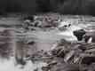
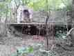 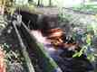 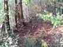 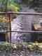 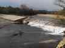 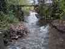
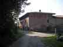 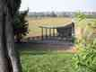
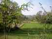 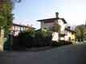 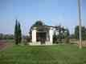
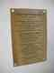